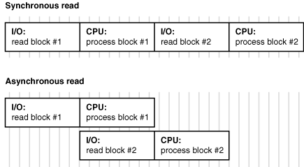

1ère étape: connaître vos données!
Extraction des XPaths avec Firebug (Firefox), ou équivalent (Chrome DevTools, etc) par inspection du DOM.
- Titre:
'/html/body/div/div/div/div[2]/header/h1' - Auteur:
'/html/body/div/div/div/div[2]/header/p/a' - Date:
'/html/body/div/div/div/div[2]/header/div/p'
Définition du pattern d'url d'article
- http://isbullsh.it/2012/04/Web-crawling-with-scrapy
- http://isbullsh.it/2012/07/The-anti-tech-startup-pattern
- http://isbullsh.it/2012/06/Css-Dropdown-tree
- http://isbullsh.it/2012/06/Rest-api-in-python
- ...
http://isbullsh\.it/\d{4}/\d{2}/[\w-]+
Fetch, scrape & export d'une page
import requests, json, lxml.html
# Crawl: fetch html
html = requests.get(url).text
# Parse html: scrape the data using XPaths
tree = lxml.html.fromstring(html)
title = tree.xpath('/html/body/div/div/div/div[2]/header/h1/text()')[0]
author = tree.xpath('/html/body/div/div/div/div[2]/header/p/a/text()')[0]
date = tree.xpath('/html/body/div/div/div/div[2]/header/div/p/text()')[0]
# Export data to JSON format
data = {'title': title, 'author': author, 'date': date, 'url': url}
json.dump(data, open('export.json', 'w'))
Résultat du crawl du site
[ {
"title": "Odyssey of a webapp developer"{
"author": "Etienne", {
"date": "27 Jun 2012", {
"url": "http://isbullsh.it/2012/06/Odyssey-Chap1-Part1/"
},
{
"title": "Blur images with ImageMagick"
"author": "Balthazar",
"date": "11 Apr 2012",
"url": "http://isbullsh.it/2012/04/Blur-images-with-imagemagick/"
},
...
Observations
- ☺ Concis, léger, peu de dépendances
- ☺ Pratique pour un usage ponctuel
- ☹ Bloquant: finir un cycle avant d'en recommencer un autre
- ☹ Lent pour un grand nombre de pages (~99% d'I/O)!
$ time python isbullshit-manual-scrape.py
0,30s user 0,06s system 1% cpu 22,335 total
I/O asynchrone
Asynchronous I/O, or non-blocking I/O, in computer science, is a form of input/output processing that permits other processing to continue before the transmission has finished.Wikipedia

Scrapy
- Framework Python de web crawling / web scraping asynchrone
- Excellente documentation: http://doc.scrapy.org/en/0.16/
- Open source: https://github.com/scrapy/scrapy
- Simple d'utilisation
- Customisable par middlewares et extensions
http://snipplr.com/all/tags/scrapy/ - Implémentation réduite à la documentation de regex & XPaths
- Bonnes pratiques imposées: séparation du crawl, scrape et export
$ scrapy startproject isbullshit
Structure de projet standard
items.py: définition des données ciblessettings.py: paramètres du crawlerpipelines.py: traitement de données une fois scrapéesspiders/: dossier contenant les différentes spidersspiders/isbullshit-spider.py: (à créer) notre spiderscapy.cfg: non abordé
Définition de la structure de données à extraire
# In items.py
from scrapy.item import Item, Field
class IsbullshitItem(Item):
title = Field()
author = Field()
date = Field()
url = Field()
Configuration du crawler
# In spider/isbullshit-spider.py
class IsBullshitSpider(CrawlSpider):
"""General configuration of the Crawl Spider """
name = 'isbullshit'
start_urls = ['http://isbullsh.it']
allowed_domains = ['isbullsh.it']
rules = [
Rule(SgmlLinkExtractor(
allow=[r'http://isbullsh\.it/\d{4}/\d{2}/\w+'], unique=True),
callback='parse_blogpost')
]
Scraping des données
# In spider/isbullshit-spider.py
def parse_blogpost(self, response):
""" Callback method scraping data from the response html """
hxs = HtmlXPathSelector(response)
item = IsbullshitItem()
item['title'] = hxs.select('//header/h1/text()').extract()[0]
item['author'] = hxs.select('//header/p/a/text()').extract()[0]
item['date'] = hxs.select('//header/div[@class="post-data"]'
'/p/text()').extract()[0]
item['url'] = response.url
return item
RELEASE THE SPIDER!
$ cd path/to/isbullshit$ scrapy crawl isbullshit -o blogposts.json -t json
Configuration de mongoDB
# In settings.py
...
MONGODB_HOST = "localhost" # default value
MONGODB_PORT = 27017 # default value
MONGODB_DB = "isbullshit-scrape"
MONGODB_COL = "blogposts"
# Send items to these pipelines after they have been scraped
ITEM_PIPELINES = ['isbullshit.pipelines.MongoDBStorage']
Pipeline de stockage dans mongoDB (connexion)
# In pipelines.py
class MongoDBStorage(object):
def __init__(self):
host = settings['MONGODB_HOST']
port = settings['MONGODB_PORT']
db = settings['MONGODB_DB']
col = settings['MONGODB_COL']
connection = pymongo.MongoClient(host, port)
db = connection[db]
self.collection = db[col]
Pipeline de stockage dans mongoDB (insertion)
# In pipelines.py
class MongoDBStorage(object):
...
def parse_item(self, item, spider)
self.collection.insert(dict(item))
log.msg("Blogpost from %s inserted in database" % (item['url']),
level=log.DEBUG, spider=spider)
return item
RELEASE THE SPIDER (again)!
$ cd path/to/isbullshit$ scrapy crawl isbullshit
D'autres utilisations des pipelines
- Compression du code html (gzip)
- Validation des données
- Clean des données (encodage, caractères HTML escape, etc)
- Téléchargement des images (filesystem, DB)
- …
Cas plus complexes: quelques pointeurs
Crawler respecteux
# In settings.py
CONCURRENT_REQUESTS_PER_DOMAIN = 1
CONCURRENT_REQUESTS_PER_DOMAIN = True
DOWNLOAD_DELAY = 1
ROBOTSTXT_OBEY = True
RETRY_ENABLED = False
Éviter de se faire bannir
# In settings.py
RANDOMIZE_DOWNLOAD_DELAY = True
DOWNLOAD_DELAY = 5
ROBOTSTXT_OBEY = False
USER_AGENT = "Mozilla/5.0 (X11; Ubuntu; Linux x86_64; rv:21.0)
Gecko/20100101 Firefox/21.0"
- User agent rotatif
- IP rotatives (Crawler basé sur Tor?)
Données générées en JS/AJAX
- python-spidermonkey: wrapper python autour d'une VM JS Mozilla
- Selenium: émulation d'un browser
- Mechanize: émulation d'un browser (bis)